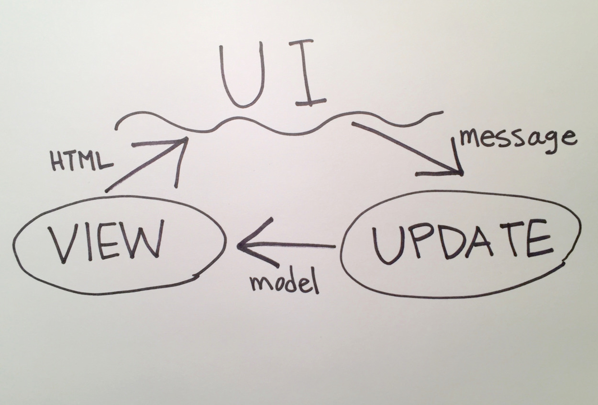

The Elm Architecture

In this lesson, we'll run a simple Elm application and learn how it all fits together!
Goals
- Run your first Elm application.
- Learn how every part of an Elm application works.
Steps
The Development Environment
Download the skeleton app here: https://github.com/elmbridge/elmoji-translator/releases/tag/release-5, navigate to the downloaded folder in your terminal, and run the following command:
elm make HelloWorld.elm
elm make compiles your application — it turns your Elm code into JavaScript code that your browser can understand. The above command uses the main function in HelloWorld.elm as the entry point to your application. It compiles that file, along with any files it references, and creates index.html, which is a simple HTML page that includes all the compiled JavaScript for your application. (It's also possible to compile into a JavaScript file if you want to use your own HTML file.)
Elm comes with another tool that makes it easy to quickly develop your application: elm reactor starts a local development server that will automatically compile your Elm code (and, if there are any errors, give you helpful error messages on what you need to fix). Let's start it up:
elm reactor
Now that elm reactor is running, you can go to http://localhost:8000/HelloWorld.elm in your web browser to see your compiled application. Whenever you refresh the page, elm reactor will recompile your code and show you the result.
You should now have a fully functional Elm application, that looks like this:
Elm Wiring
So how does any of this work? Let's take a look at HelloWorld.elm.
main =
Browser.sandbox
{ init = init
, view = view
, update = update
}
The main function describes the initialization logic for your Elm application. Every entry point file requires a main function. It requires a record with three basic pieces of every Elm application:
- The initial
model, which describes the state of our application. Our application will create newmodelvalues as the user interacts with it. - The
viewfunction, which is responsible for converting amodelinto HTML for Elm to render to the UI. It also maps all possible user actions to the appropriatemessages. - The
updatefunction, which is responsible for updating the application's state based on triggeredmessages. It consumes the current application state (themodel) and a singlemessage, and returns a newmodelthat describes the application's new state.
But wait, didn't we say that a value can never change in Elm? What's exactly changing here? Good question — let's come back to it when we finish looking at the rest of the pieces.

The initial model (passed to sandbox via the init argument), with the view, and update functions, together form a triad that is required in every Elm application. For more complicated programs, a few other pieces are required — however, for this session, we'll focus on the core triad.
On Initializing the Application
Let's investigate each of these pieces one by one. First, let's check out the init function to see what the initial state of our application is.
init =
{ buttonLabel = "hello world!" }
As you can see, init takes no arguments and returns a record, which is a name-value map with predefined structure. This particular record has a single field called buttonLabel, with a value of "hello world!". This record represents the state of our application — it is the only thing in our entire application that can change over time. As the model changes, the UI should change to reflect its new value.
It is convention to write a type alias to describe your application's state, and call it Model, like this:
type alias Model =
{ buttonLabel : String }
We'll learn more about type aliases later in this tutorial, but for now, it's worth noting that it is simply used for convenience. It's an easy way for other Elm developers to tell exactly what information is stored in your model.
On the Application View
Now, let's take a look at our view, which is responsible for converting our model into HTML. Any changes between the produced HTML and the last rendered HTML will be rendered to the UI by Elm.
view model =
Html.div
[ Html.Attributes.class "skeleton-elm-project" ]
[ Html.node "link"
[ Html.Attributes.rel "stylesheet"
, Html.Attributes.href "stylesheets/main.css"
]
[]
, Html.div
[ Html.Attributes.class "waves-effect waves-light btn-large"
, Html.Events.onClick ChangeText
]
[ Html.text model.buttonLabel ]
]
If you have worked with Angular, React, Ember, or another front-end framework, this part may be somewhat familiar to you. Every front-end framework has its own syntax for describing HTML, and Elm is no different. The resulting HTML looks like this:
<div class="skeleton-elm-project">
<link rel="stylesheet" href="stylesheets/main.css">
<div class="waves-effect waves-light btn-large">
hello world!
</div>
</div>
The view function uses the Html module to render HTML nodes. Html.div is a function that consumes two lists — a list of attributes, and a list of children. Our first div has one attribute (a class attribute that provides a class for styling) and it has two children: a link tag and another div.
The link tag has two attributes (rel, and href) and no children.
The child div has two attributes (another class attribute and an onClick handler). It also has one child: a plain-text HTML node, rendered using the Html.text function.
What does model.buttonLabel mean in the context of our view function? This function is responsible for rendering the application's current state as HTML — and that state is stored in the model variable. Every time the application's state changes, this function will be called with a new model value — if model.buttonLabel is different than the last time this function was called, the UI will update with new text!
You may wonder how this function can be performant — every time the model changes, even slightly, our view function has to recalculate every HTML element in your application. If you have hundreds of elements, and dozens of potential changes, how does Elm not collapse under the load?
Good news: Elm is optimized to be performant under pressure. Using a virtual DOM, Elm ensures that the entire page doesn't have to re-render every time the application's state changes. React and Ember use similar strategies, although Elm has more tricks up its sleeve because of its functional nature. The exact details are out of scope for this tutorial, however — just know that you generally don't have to worry about HTML rendering performance when writing Elm.
Before we move on, let's take another look at that onClick handler:
Html.Events.onClick ChangeText
This line of code is key to our application — it maps a potential user action to a message that can cause our application to change. In this case, clicking on our div causes the ChangeText message to be sent.
There are lots of potential user actions defined in the Html.Events module — as with JavaScript, you can track when a user clicks an element, presses a key, or submits a form. If you don't map these user actions to a message, however, they will be ignored by your application.
On the Application Model
Let's return to the question of change we saved for later when we were looking at init: What does it mean when we say model changes? Let's take another look at our diagram:
Even though we said model, view, and update together form a triad, you can see that model is not a first-class circle in this diagram. In fact, model is just passed around as an argument to view and update functions.
This model argument may be different each time those functions are called. So you see, changing the model doesn't mean modifying its value, but pointing the model argument at a different value.
The update function is responsible for this transformation. When a message is triggered by the UI, update consumes the specified message and the current model, and returns a new model for the view function to render.
update msg model =
case msg of
ChangeText ->
if model.buttonLabel == "hello world!" then
{ model | buttonLabel = "goodbye world!" }
else
{ model | buttonLabel = "hello world!" }
We just saw that the ChangeText message can be triggered when the user clicks our button. When a message is sent, this function applies some conditional logic:
- If the current application's state (stored in the
modelvariable) has a.buttonLabelvalue of"hello world!", the function returns a newmodelwith a value of"goodbye world!". - If not, then
model.buttonLabelmust be already equal to"goodbye world!", so the function returns amodelwith abuttonLabelvalue of"hello world!".
Either way, the new model will be converted to HTML, and any changes will be rendered to the UI by our view function.
Wait, there's only one possible action tracked in our UI — why have a case expression at all? This is convention in Elm-land. As you build an application, there will be more and more kinds of messages to which your update function will have to react. Consequently, this case expression will get longer and longer to accommodate the new messages.
It's worth taking a look at the Msg type:
type Msg
= ChangeText
and later on in the update function's type signature:
update : Msg -> Model -> Model
This is an example of a union type declaration in Elm. We'll go further into the details in a future lesson, but for right now, you can think of this as a way to model messages in our application. The above code declares two things (reading from that type signature first):
- the
updatefunction takes two arguments, the first is aMsg, and the second is aModel. - any value that is of
Msgtype will be exactly one of the values specified in thetypedefinition (in this case, there is only one acceptable value which isChangeText.) If we wanted to add another possible value formessage, we would have to change this declaration of the union typeMsgto include the new possibility.
Elm doesn't force us to use a union type called Msg for messages — we could just as easily model messages as strings, numbers, or records. It is convention, however, to model data using union types whenever appropriate. Don't worry if you are somewhat lost — union types are one of the more difficult concepts to learn as a beginner to Elm, and it's fine for now if they are simply magic words you know you can recite.
To review one more time, a Browser.sandbox needs:
- An initial version of our model (
init : Model) - A description of how the model is turned into html (
view : Model -> Html) - A function that given a Message and an old model tells us what the new model should look like (
update : Msg -> Model -> Model)
Indeed, if we look at the type signature of Browser.sandbox, we see that it takes this type of record and returns a program!
sandbox :
{ init: model
, view : model -> Html msg
, update : msg -> model -> model
} -> Program Never
Now that we're done touring the basics of the Elm triad, let's get building!